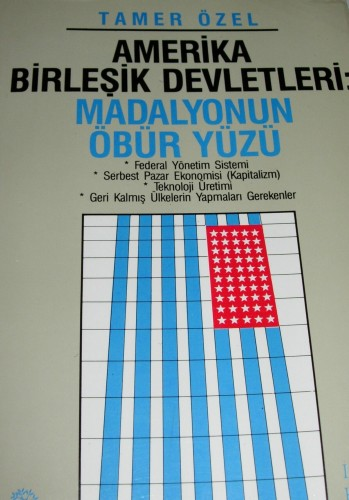

|
"El sýkmak memnun":
T.C.'nin büyükelçilik görevlileri, PTO (Patent and Trademark Office)'nun halkla iliþkilerinden bir rehber ayarlamýþlardý. Amerikalý rehber PTO'nun deðiþik yerlerini gezdirdi. Orada, bir de, PTO'da geri kalmýþ ülke yetkilileri ile yapýlan toplantýlara "glad hand shake" (el sýkmak memnun) toplantýsý dendiðini öðrendik. Eskiden, geri kalmýþ ülkelerden birinin, üstelik de önemli, bir bakaný PTO'yu ziyaretinde el sýkýþýrken, "memnun oldum" demek için Ýngilizce anlamý olmayan bu tabiri kullanmýþ; Sonuçta "Glad hand shake", üçüncü Dünya ülkeleri yetkilileri ile yapýlan sýkýcý ve vakit kaybý olarak nitelendirilen toplantýlara "takma ad" olarak yerleþmiþ.
Bakan bey daha evvel Türkiye'de bir firmada genel müdürlük yapmýþtý. PTO'dan çýkýnca "Yahu lisans almak için adamlarýn öpmediðimiz etekleri kalmazdý, meðerse hiç gerek yokmuþ!" dedi. Ben, "T.C.'de bunu anlatmaya çok çalýþtým ama kimse dinlemiyor" deyince, "Aða! Sen, sen olarak anlatmaya çalýþtýn, ben T.C.'nin bir bakaný olarak anlatacaðým, bu farklý olacak!" demiþti.
O tarihten sonra Bakan Bey'i bilim ve teknoloji konularýnda yönlendirmeye çalýþtým. Bir tedbirler paketi önerdim (detaylarý "ABD: Madalyonun Öbür Yüzü" kitabýmda verilmiþtir). Öncelikle coðrafi olarak kolay þekilde serpiþtirilecek altý patent kütüphanesi vardý. Kaynaðýn Devlet Planlama Teþkilatý (DPT) tarafýndan ayrýlmasý gerekiyordu. Dolayýsý ile DPT'nin onay vermesi gerekiyordu.
DPT Müsteþarý'nýn bir gün uçakta yanýna bir ABD'li patent avukatý düþmüþ. Avukat, Müsteþar Bey'e "patentler önemlidir!" demiþ. Bir Amerikalý'dan böyle bir beyan hafýzasýnda yer etmiþ. Onun sayesinde müsteþar bey konuyu duyunca kesip atmadý, ancak "altý olmaz ama bir tane olur" dedi.
|
|
ABD Patent Ofisi (United States Patent and Trademark Office) yeni binasý;
Alexandria, Virginia (Washington D.C. yakýnlarý) www.uspto.gov |
Rapid Patent:
Mikrofilmleri imal eden "Rapid Patent" firmasý ile irtibat kurdum. Ayriyeten onlar aracýlýðý ile ABD'li patent hukukçularýna patentleri anlattýrmak üzere Ankara, Ýstanbul ve Ýzmir'de birer seminer düzenlettirdim. Aslýnda bu seminerleri -hem ABD'deki düzeni, hem Türkiye'deki düzeni bilen biri olarak- ben verebilirdim. Ama Türk'ün Türk'e karþý güvensizliði, kýymet vermemesi ve yabancýlara Türk'ten daha çok inanmalarýndan dolayý, bu semineri ABD'li avukatlar verdi. Tabii ki mesajlar hedef kitleye eriþemedi.
Rapid Patent þirketi o zamanlar (1980'li yýllar) ABD Patent Ofisi ile kontratlý çalýþarak ABD patentlerini mikro film haline getiren, tüm Dünya patent kütüphanelerine (mikrofilmlerini) satan tek kuruluþ idi. Türkiye'ye gelecek arþivle ilgilenen þirket yetkilisine geliþmekte olan ülkeler arasýnda en çok hangilerine satýþ yaptýklarýný sorduðumda verdiði cevap beni hiç þaþýrtmamýþtý: Güney Kore, Taiwan, Çin. Ayný þirket yatkýlýsý, mikrofilm sistemleri ve patent kütüphaneleri geliþmeden evvel ABD'deki üretim firmalarýnýn Ar-Ge departmanlarýnýn ABD patent kütüphanesinde üstlenmiþ ekiplerinin yeni ve eski patentleri nasýl araþtýrdýklarýný da anlatmýþtý; Her þirketin Ar-Ge departmanýndan bir ekip, patent kütüphanesinde nöbetleþe çalýþýrlarmýþ. Diðer bir deðiþle patent ofisinin çalýþma salonunda ekibi olmayan "üretici" þirket yok imiþ.
T.C.'nin ilk Patent Kütüphanesi:
Türkiye'nin tek Patent Kütüphanesi geldi, hiç ilgisiz bir yere, Türk Standartlar Enstitüsü'ne yerleþtirildi. 3 kiþi eðitim için Rapid Patent'e gitti, geldikten sonra patent arþivinde çalýþtýrýlmadýlar. Derken benim danýþmanlýðýný yaptýðým bakan ayrýldý. O arada ABD patent kanunu ile içtihatlarý da içeren geniþ bir rapor hazýrlamýþtým. Giden bakanýn arkasýndan gelen iki bakan (takriben bir yýl içinde) ne konuyu duymak ne de hazýrladýðým raporu okumak istediler. Her yarý aydýn gibi Dünya'yý zaten bildiklerini sanýyorlardý...
1989'da istifa ettim. Hazýrladýðým raporu geniþlettim, ABD'deki federal yönetim sistemi ve serbest piyasa ekonomisini de ekledim. Ýnkýlap Kitapevi yayýnlamak istedi. T.C.'deki telif hakkýný aldý. Telif ücretini kitap olarak istedim. 80 tane kitap etti. Onlarý da adreslerini bulabildiðim kütüphanelere gönderdim.
T.C.'de her kafadan çýkan kýymetsiz fikirlerin oluþturduðu gürültülü ortamda artýk yapabileceðim bir þey olmadýðýna karar vermiþtim.
Derken oldu zaman 21. yüzyýl, internet çýktý. Dünya'nýn neresinde olursa olsun benim yaþadýklarýmý genç beyinler yaþamasýn diye, yol göstermek amacý ile, patents4technologies.com sitesini açtým. Yaþadýðým sürece de açýk tutmak istiyorum. Yeri gelirse TurkCADCAM Grubu gibi, hedef kitleden insanlarýn olabileceði yerlere mesajlarý vermeye çalýþýyorum, çalýþacaðým. Ama faydalanan oluyor mu? Oluyorsa kaç kiþi oluyor? Bilemiyorum.
Tüm okuyanlara sevgilerimle,
Tamer Özel
* Reference desk: ABD'de kütüphanelerde diðer ülkelerdekine benzer, referans masasý bulunuyor. Ancak ABD'dekilerin diðer ülkelerden farký; bu masada çalýþanlarýn bilginin yayýlmasý konusunda uzman olmalarý. (Diðer bir deðiþle; bir soru ya da sorunla gittiðinizde, onu halletmek için seferber olmalarý.)
Yazarýn diðer makaleleri:
|